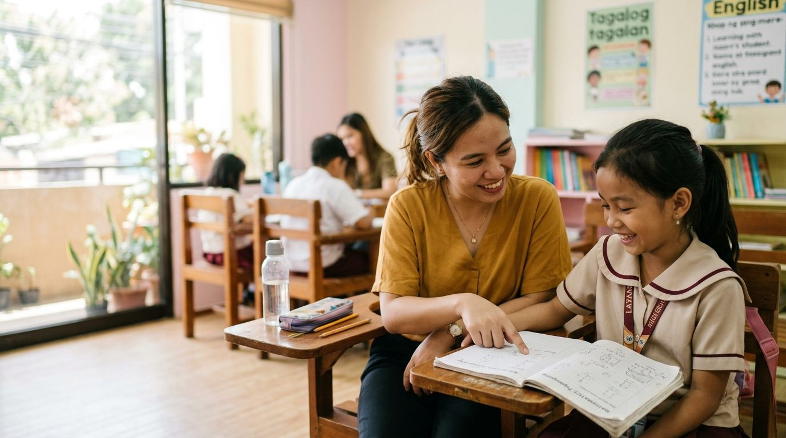
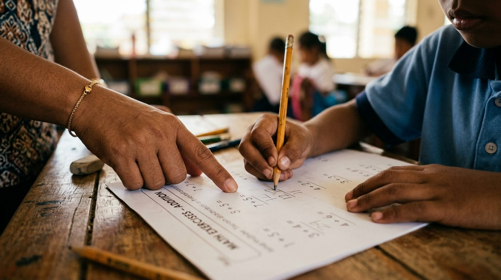
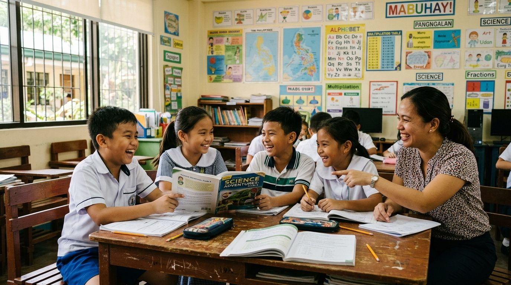

Find out what your child is actually stuck on.
One Saturday visit. A free hour with a subject tutor, a trial class in a real session, and a written report on exactly where the gap is.
Six slots each Saturday, with half an hour between every child. We confirm the same day.

What the hour gives you
Four things, none of them costly
You can read the page, decide, and walk away. That part is the point.
One hour, one to one
A subject tutor who teaches that grade level every day, working from the material your child actually uses.
A trial class
Your child joins a real session afterwards. You watch from the back and judge the tutor yourself.
A written report
Plain language, addressed to you. What is strong, what is not, and what to do about it first.
Nothing owed
No enrolment, no package, no follow-up calls. Keep the report and leave if that is what you want.
The diagnostic
One hour is enough to find the step that broke
A grade tells you where a child is. It does not tell you which step fell out, and it never tells you what to do on Tuesday. That is what the hour is for.
The tutor works from your child's own notebook and quiz papers, not a worksheet they have never seen. Toward the end they will tell you plainly what they have found, before you have gone home.

Mathematics / Grade 5
What we found
First. Eight sessions on fractions, then word problems. Six to eight weeks, re-assessed at the end.
Tonight, free. Ask her to explain one word problem back to you, out loud, without helping. She will get stuck. That is the sticking point.
An illustrative sample in the format we use. Not a real student's record.
The trial class
Small groups, real lessons, no observation theatre
Straight after the hour, on the same Saturday, your child joins an ordinary session with other pupils at their level. You are welcome to sit at the back for as long as you like. Plenty of parents do, and it is not strange.

Group size
Capped per grade band, so nobody sits at the back and gets forgotten.
Same tutor
Your child keeps the tutor who did the diagnostic, unless you ask otherwise.
Change any time
Tell us and we will move them. A term spent switched off helps nobody.
A Saturday at the centre
You come for the morning. You leave knowing what to fix.
Saturdays only, because that is when our tutor is free. It is one visit rather than two, and the whole thing fits inside a family weekend.
- Eight in the morning to five in the afternoon. Six one hour slots, first come first served.
- Half an hour between every child. Nobody is rushed, and the tutor has time to finish the write-up before the next one.
- One visit covers everything. The hour, the trial class afterwards, and the written report two or three days later.
- Online if you would rather. Same Saturday hours, with a test call before your first session.
- In person in Dasmarinas, Cavite. Address and parking in your confirmation.
Subjects
Three subjects, one method
We teach Mathematics, English and Science to Grades 1 to 8. Same diagnostic, same report, whichever subject it turns out to be.
Parents
What they said afterwards
I arrived ready to sign something. I left with two pages and no pressure, which is not what I expected.
Parent of a Grade 5 / Dasmarinas
One sentence changed how I spoke to my daughter. It is her method, not her memory. I had been telling her to try harder for a year.
Parent of a Grade 6 / General Trias
They told us what to do at home for free before they told us what it would cost. No other centre has done that.
Parent of a Grade 3 / Imus
Availability
Saturdays, 8am to 5pm
Six one hour slots each Saturday, and they go. If you can, book a few weeks ahead so you get the time that suits your weekend rather than the one that is left.
Each slot runs one hour, with half an hour after it before the next child. That gap is deliberate: it is when the tutor resets the desk and finishes writing up the notes from the session you just sat in on.
We cannot offer weekday or evening slots, because our tutor does not work them.
Questions
Before you book
Is the hour actually free?
Yes. The diagnostic, the trial class and the written report all cost nothing. There is no enrolment step and no obligation afterwards. If you book and then decide against us, nothing happens and there is nobody to call.
What should we bring?
The notebook your child uses for that subject, and any quiz or test papers from the last month, including the ones with poor marks on them. If you have a teacher's written comment, bring that too. It is often the most useful thing in the room.
Why Saturdays only, and only six slots?
Saturdays are the one day our tutor is free, and six is all we can do well. There is half an hour after every session to reset the desk and write up what happened while it is still fresh. A back to back schedule would look like more availability and give your child a worse hour than they came for.
Can we do it online instead?
Yes, on the same Saturday hours. The assessment is the same quality, and for some families it is easier because the child is already comfortable at the table. We arrange a test call before your first session.
What if my child does not like the tutor?
Tell us and we move them. We would rather change the person than have a child spend a term quietly switched off. Most mismatches are settled by switching tutor, not subject.
How long until the grades move?
It depends on the gap. A method problem can move in four to six weeks. A gap that began in Grade 2 usually needs a term. The report tells you which kind of problem this is before you spend anything, and we would rather tell you to wait than take your money.
Where exactly are you?
Bright Minds Learning Center is in Dasmarinas, Cavite. The full street address, parking and directions arrive with your booking confirmation, along with the tutor's name and your time.
The answer takes one Saturday
Reserve a slot and get a written page you can act on that week. Nothing to pay, nothing to sign.